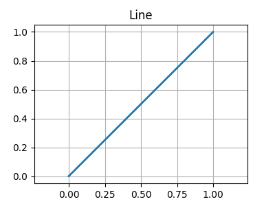
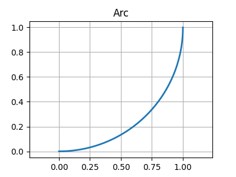
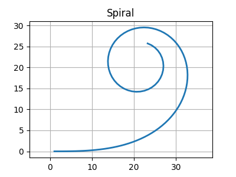
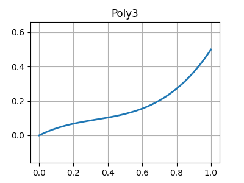

s/t 坐标系是 OpenDRIVE 的核心坐标系统：
- s (弧长): 沿参考线中心线测量的纵向距离。
- t (横向偏移): 垂直于参考线中心线的横向距离。
这种系统简化了车道属性定义（如 laneOffset），使物体可以轻松放置。
基本概念：OpenDRIVE 是一个基于 XML 的道路网络描述标准，核心在于通过参数化参考线 (Reference Line) 来定义道路结构。
核心特点：
OpenDRIVE 使用不同的几何基元通过数学方式定义参考线：

用于两点间的最短距离路径，由 length 定义。

由固定的 curvature（曲率）定义，形成恒定半径的圆弧路径。

通过 curvStart 和 curvEnd 定义曲率平滑过渡，用于缓解转弯时的离心力冲击。

利用三次方程：a*s^3 + b*s^2 + c*s + d 描述坐标轴的复杂偏移。
s/t 坐标系是 OpenDRIVE 的核心坐标系统：
这种系统简化了车道属性定义（如 laneOffset），使物体可以轻松放置。